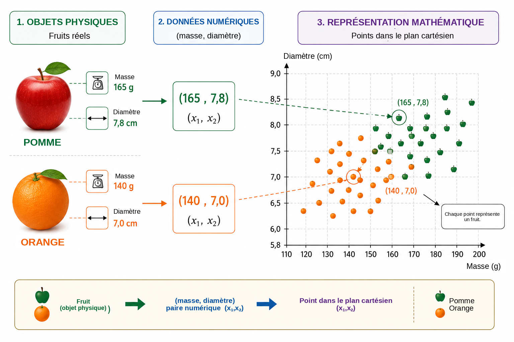
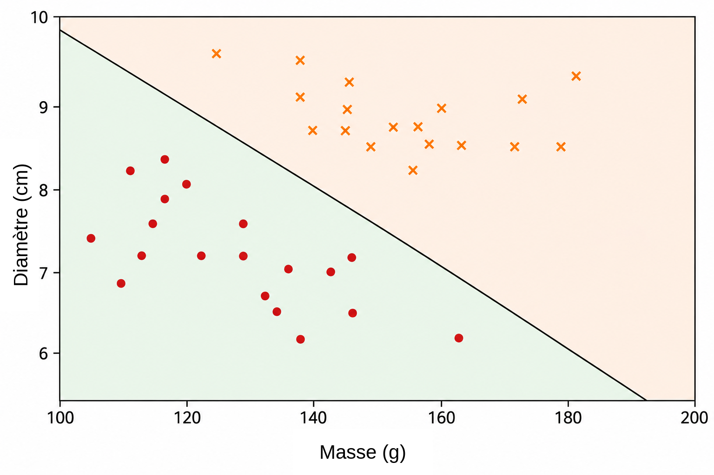
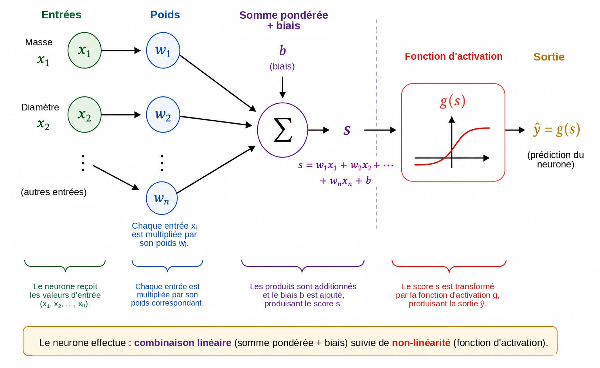
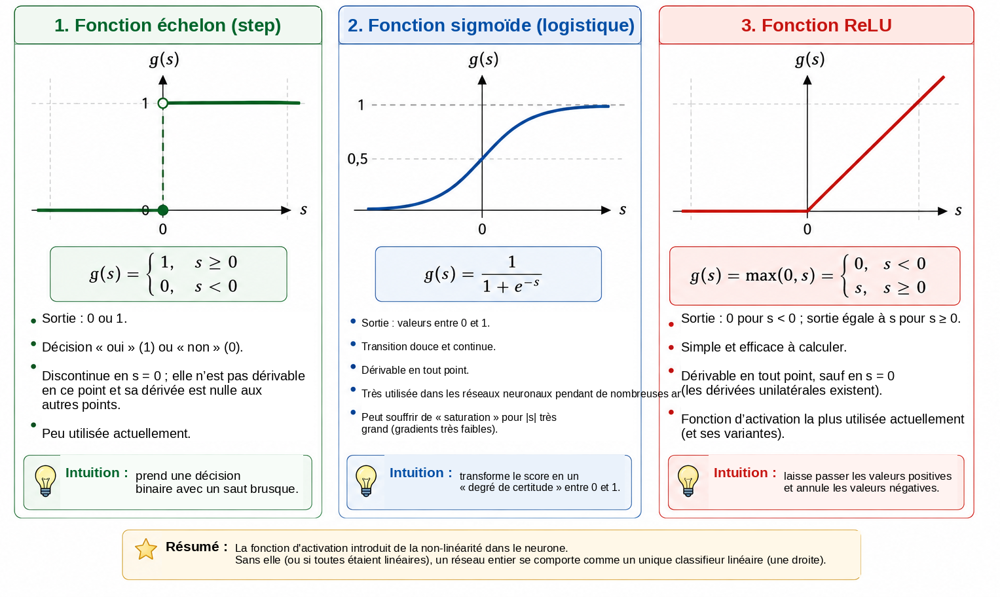
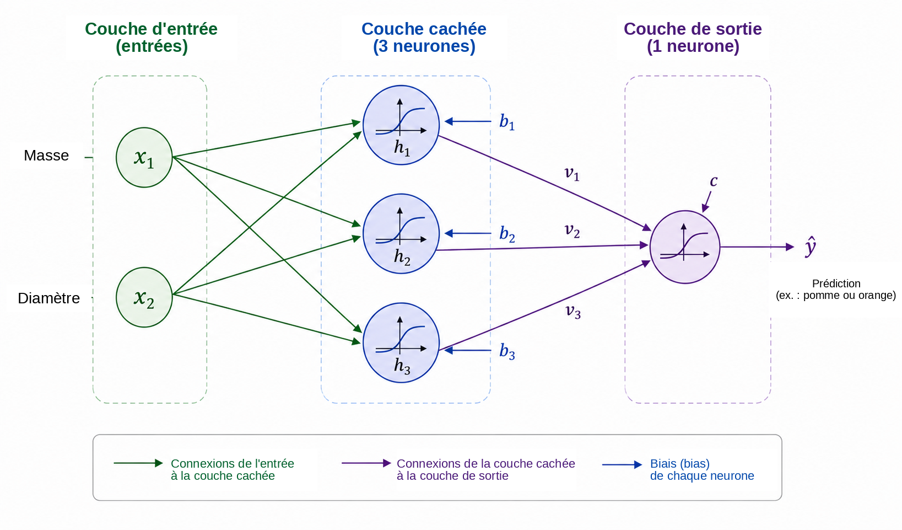
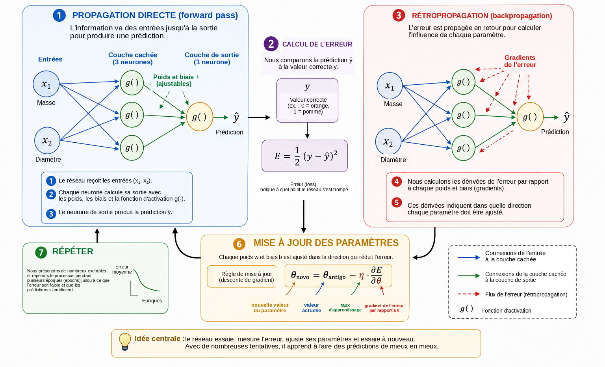
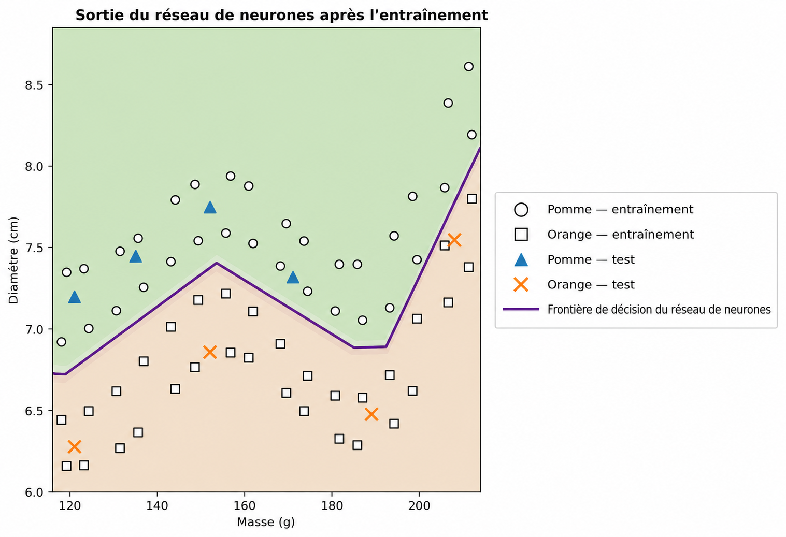

Quand un ordinateur peut-il apprendre?
Dans la vie quotidienne, nous prenons des décisions de classification presque sans nous en rendre compte. En observant un fruit, nous l’identifions rapidement comme une pomme ou une orange; lorsqu’un message arrive sur le téléphone, nous distinguons une conversation légitime d’une publicité indésirable; dans une analyse médicale, plusieurs mesures peuvent être combinées pour appuyer une décision; et, dans les établissements financiers, de nombreuses données sont évaluées avant l’octroi d’un crédit. Dans tous ces exemples, plusieurs caractéristiques sont considérées conjointement afin de produire une réponse.
Dans de nombreux programmes informatiques traditionnels, les règles qui produisent cette réponse sont écrites explicitement par le programmeur. Cette approche fonctionne bien lorsque les règles sont connues et peuvent être formulées clairement. Elle devient moins efficace lorsque les données sont très variables ou lorsqu’il est difficile d’établir à l’avance toutes les conditions nécessaires à une bonne décision. Cela conduit à une question naturelle:
Peut-on construire un programme qui apprenne une règle de
décision à partir
d’exemples, au lieu de recevoir cette règle à l’avance?
Il s’agit de l’une des idées centrales de l’apprentissage automatique, un domaine de l’intelligence artificielle consacré aux méthodes qui ajustent des modèles à partir de données . Dans un problème d’apprentissage supervisé, l’algorithme reçoit des exemples accompagnés de leurs réponses correctes, et nous cherchons un modèle capable de produire des prédictions utiles également pour des cas qui n’ont pas été utilisés pendant l’entraînement. Parmi les nombreux modèles développés à cette fin, les réseaux neuronaux artificiels ont acquis une grande importance dans des applications telles que la reconnaissance d’images, le traitement du langage, l’analyse de signaux et la prévision de séries temporelles .
L’utilisation des réseaux neuronaux comme passerelle entre les mathématiques, l’informatique et l’enseignement scolaire a déjà été discutée dans Professor de Matemática Online par Batista et Martins , qui présentent une activité faisant intervenir la formation des enseignants, Python et la reconnaissance de chiffres. Le présent article suit une voie complémentaire. Notre objectif principal est d’exposer les mathématiques internes d’un petit réseau neuronal, en partant de la géométrie analytique et en progressant pas à pas jusqu’au calcul des gradients et à une implémentation manuelle de la rétropropagation.
Malgré la sophistication des applications modernes, le cœur mathématique d’un réseau neuronal peut être introduit à l’aide d’idées relativement familières. À un niveau élémentaire, un réseau neuronal est une composition de fonctions dont les paramètres sont ajustés à partir de données. Nous commençons par un problème géométrique simple, réinterprétons une droite séparatrice comme un neurone artificiel, connectons plusieurs neurones, étudions le rôle des fonctions d’activation et montrons comment les dérivées peuvent être utilisées pour ajuster automatiquement les paramètres du réseau. Enfin, nous implémentons en Python un exemple petit mais complet, en maintenant une correspondance directe entre les équations et le code.
Représentation mathématique du problème
Pour comprendre le fonctionnement d’un réseau neuronal, nous commençons par un problème volontairement simple: distinguer des pommes des oranges. Un fruit possède de nombreuses caractéristiques qui pourraient être utiles pour cette tâche, telles que la couleur, la masse, le diamètre, la texture et l’arôme. Cependant, un premier modèle mathématique n’a pas besoin d’inclure toute cette complexité. Nous n’utiliserons que deux grandeurs faciles à mesurer: la masse, en grammes, et le diamètre, en centimètres.
Ainsi, chaque fruit sera représenté par un couple ordonné \[(x_1,x_2),\] où \[x_1=\text{masse} \qquad\text{y}\qquad x_2=\text{diamètre}.\]
Ainsi, le couple \((155,\;7.2)\) représente un fruit de masse \(155\) g et de diamètre \(7.2\) cm. En remplaçant l’objet physique par deux mesures numériques, nous associons chaque fruit à un point du plan cartésien: la première coordonnée indique sa masse et la seconde son diamètre. La Figure 1 illustre cette représentation pour un ensemble hypothétique de pommes et d’oranges.

Cette transformation modifie la nature apparente du problème. Au lieu de demander directement comment reconnaître une pomme ou une orange, nous pouvons formuler une question géométrique: comment séparer dans le plan les points appartenant aux deux classes? Ce changement de perspective est fondamental en apprentissage automatique. Les images, les textes, les sons et les signaux expérimentaux doivent être convertis en représentations numériques avant de pouvoir être traités par un algorithme. Dans notre exemple, chaque objet ne possède que deux coordonnées; dans les applications réelles, une représentation peut contenir des centaines, des milliers, voire des millions de composantes. Le principe reste le même: chaque exemple est associé à une collection de nombres, et le modèle cherche une règle qui transforme cette représentation en la réponse souhaitée.
Nous commençons par la règle géométrique la plus simple disponible et demandons si une seule droite peut séparer correctement les points correspondant aux pommes de ceux correspondant aux oranges.
Une droite comme classifieur
Une fois chaque fruit représenté par un point du plan cartésien, la classification devient un problème géométrique: une droite peut-elle séparer les pommes des oranges? Cette question exprime l’idée fondamentale d’une importante famille de méthodes d’apprentissage automatique appelées classifieurs linéaires.
Considérons une droite qui traverse le nuage de données, comme l’illustre la Figure 2. La droite divise le plan en deux demi-plans. Si la plupart des points correspondant aux pommes se trouvent d’un côté et la plupart des points correspondant aux oranges de l’autre, la position d’un nouveau fruit par rapport à la droite peut servir de règle de classification. Après avoir mesuré sa masse et son diamètre, nous représentons le fruit par un point et déterminons de quel côté de la droite ce point se situe.

Dans le plan cartésien \((x_1,x_2)\), une droite peut être décrite par \[w_1x_1+w_2x_2+b=0, \qquad (w_1,w_2)\neq(0,0).\]
Le vecteur \((w_1,w_2)\) est perpendiculaire à la droite et détermine donc son orientation, tandis que le paramètre \(b\) contribue à déterminer sa position. Cette représentation présente une petite redondance: multiplier \(w_1\), \(w_2\) et \(b\) par une même constante non nulle produit exactement la même droite. Par conséquent, les paramètres qui décrivent la frontière ne sont pas uniques. Leur interprétation numérique dépend également de l’échelle des variables. Comme la masse est mesurée en grammes et le diamètre en centimètres, les valeurs numériques de \(w_1\) et \(w_2\) ne doivent pas être comparées sans tenir compte des différentes unités.
L’équation même de la droite fournit une manière simple de déterminer de quel côté de la frontière se trouve un point. Nous définissons le score \[s(x_1,x_2)=w_1x_1+w_2x_2+b.\]
Si \(s(x_1,x_2)=0\), le point est sur la droite. Si \(s(x_1,x_2)>0\), il se trouve dans un demi-plan; si \(s(x_1,x_2)<0\), il se trouve dans l’autre. Si nous décidons que les scores positifs correspondent aux pommes et les scores négatifs aux oranges, la règle devient \[\begin{cases} s(x_1,x_2)\geq 0 & \Longrightarrow \text{pomme},\\ s(x_1,x_2)<0 & \Longrightarrow \text{orange}. \end{cases}\]
Par exemple, considérons la frontière définie par \[w_1=\frac{1}{10}, \qquad w_2=2, \qquad b=-30.\] Pour un fruit de masse \(160\) g et de diamètre \(7.8\) cm, \[\begin{aligned} s &=\frac{1}{10}\times160+2\times7.8-30\\ &=16+15.6-30\\ &=1.6. \end{aligned}\] Comme le score est positif, le point se trouve dans le demi-plan que nous associons aux pommes. Ce classifieur étiquetterait donc le fruit comme une pomme.
Tout choix de \(w_1\), \(w_2\) et \(b\) ne produit pas une bonne classification. Certaines droites séparent mal les deux groupes, tandis que d’autres commettent moins d’erreurs. Le problème d’apprentissage consiste précisément à utiliser des exemples préalablement étiquetés pour déterminer des valeurs des paramètres qui réduisent une mesure de l’erreur du modèle. Au lieu de programmer directement la position de la droite, nous voulons que l’algorithme ajuste ses coefficients à partir des données.
Une seule droite peut bien fonctionner lorsque les classes sont approximativement linéairement séparables. Des jeux de données plus complexes peuvent nécessiter une frontière non linéaire. Avant d’aborder cette limitation, nous réinterprétons le classifieur que nous venons de construire comme une unité de calcul élémentaire: un neurone artificiel.
Le neurone artificiel
Dans la section précédente, l’expression \[s=w_1x_1+w_2x_2+b\] a été utilisée pour déterminer de quel côté d’une droite se trouve un fruit. La même expression peut être considérée comme la première étape du calcul réalisé par un neurone artificiel. Un neurone reçoit des entrées numériques, les combine à l’aide de poids et d’un biais, puis applique une fonction mathématique pour obtenir sa sortie.
Dans notre exemple, les entrées sont la masse \(x_1\) et le diamètre \(x_2\). Chaque entrée est multipliée par un paramètre appelé poids; les produits sont additionnés avec un terme constant \(b\), appelé biais. La Figure 3 présente schématiquement ce calcul.

Les poids déterminent la manière dont les variations des entrées affectent le score. Si \(x_2\) et toutes les autres quantités restent fixes, une variation \(\Delta x_1\) modifie \(s\) de \(w_1\Delta x_1\). De manière analogue, une variation \(\Delta x_2\) modifie le score de \(w_2\Delta x_2\). Le signe est également important: un poids positif fait qu’une augmentation de l’entrée augmente le score, tandis qu’un poids négatif produit l’effet inverse. Cette interprétation doit être utilisée avec prudence lorsque les variables ont des unités et des échelles différentes. Pour cette raison, les implémentations pratiques normalisent ou standardisent souvent les données d’entrée avant l’entraînement.
Le biais \(b\) est le terme constant de la transformation affine. Géométriquement, il permet de déplacer la frontière de décision. Si \(b=0\), l’équation \[w_1x_1+w_2x_2=0\] oblige la droite à passer par l’origine. Avec un biais, la frontière peut être déplacée vers d’autres positions. De manière équivalente, lorsque \(x_1=x_2=0\), le score vaut simplement \(s=b\).
Le score n’est pas nécessairement la sortie finale du neurone. En général, on lui applique une fonction d’activation \(g\): \[\widehat{y}=g(s)=g\left(w_1x_1+w_2x_2+b\right).\] Le calcul comporte donc deux étapes, \[\begin{aligned} s &= w_1x_1+w_2x_2+b,\\[4pt] \widehat{y} &= g(s). \end{aligned}\]
En utilisant les valeurs des paramètres de la section précédente, nous obtenons \(s=1.6\). Si nous choisissons la fonction échelon \[g(s)= \begin{cases} 1, & s\geq0,\\ 0, & s<0, \end{cases}\] alors \(\widehat{y}=g(1.6)=1\). Selon notre convention, le fruit est classé comme une pomme. Avec cette activation, la décision change lorsque \(s\) franchit zéro; la frontière entre les classes est donc exactement \[w_1x_1+w_2x_2+b=0.\]
Un neurone unique est donc un objet mathématique simple doté de paramètres ajustables. Sa véritable importance apparaît lorsque de nombreuses unités de ce type sont connectées. Toutefois, avant de construire un réseau, nous devons comprendre pourquoi la fonction d’activation est essentielle.
Pourquoi avons-nous besoin d’une fonction d’activation?
Un neurone calcule d’abord un score au moyen d’une transformation affine, puis applique une fonction d’activation. Cette seconde étape est essentielle pour qu’un réseau neuronal puisse représenter des relations complexes. Pour comprendre pourquoi, imaginons un réseau dans lequel aucune fonction d’activation n’est utilisée. Chaque unité aurait alors la forme \[y=w_1x_1+w_2x_2+b.\]
Pour une illustration unidimensionnelle, supposons qu’une première unité produise \[h=ax+b\] et qu’une seconde calcule \[y=ch+d.\] La substitution donne \[y=c(ax+b)+d=acx+(cb+d),\] qui reste une fonction affine de \(x\). La même affirmation reste vraie en plusieurs dimensions: une composition de transformations affines demeure affine. Ainsi, ajouter de nombreuses couches sans opération non linéaire ne rend pas le réseau fondamentalement plus expressif; toute la composition pourrait être remplacée par une seule transformation affine.
Une fonction d’activation rompt cette limitation. Après avoir calculé le score \(s\), le neurone applique une fonction, généralement non linéaire, \[h=g(s).\] Lorsque plusieurs unités de ce type sont connectées, la composition résultante ne peut plus être réduite à une seule transformation affine. Cela permet au réseau de construire des frontières de décision plus complexes.
L’activation la plus simple est la fonction échelon, \[g(s)= \begin{cases} 1, & s\geq0,\\ 0, & s<0. \end{cases}\] Elle produit une décision binaire et est très utile pour comprendre la classification. Cependant, sa dérivée est nulle pour \(s\neq0\) et n’est pas définie en \(s=0\). Comme l’entraînement fondé sur les gradients utilise les dérivées pour déterminer comment les paramètres doivent changer, la fonction échelon n’est pas adaptée à ce mécanisme d’entraînement.
Une alternative est la fonction sigmoïde, \[\sigma(s)=\frac{1}{1+e^{-s}}.\] Elle transforme tout nombre réel en une valeur strictement comprise entre \(0\) et \(1\). Pour des valeurs très négatives de \(s\), la sortie se rapproche de \(0\); pour des valeurs très positives, elle se rapproche de \(1\); entre les deux extrêmes, la transition est progressive. La sigmoïde est dérivable en tout point et \[\sigma'(s)=\sigma(s)\bigl(1-\sigma(s)\bigr).\] Comme ses sorties se situent entre \(0\) et \(1\), elle est fréquemment utilisée dans la couche de sortie d’un classifieur binaire. Dans une formulation probabiliste et avec une fonction de perte appropriée, la sortie peut être interprétée comme une estimation de la probabilité de la classe représentée par \(1\). Cependant, dans les couches cachées, la sigmoïde peut poser une difficulté: pour des entrées de grande amplitude, sa dérivée devient très faible, ce qui contribue au problème du gradient qui s’évanouit dans les réseaux profonds.
Une activation très utilisée dans les couches cachées est ReLU (Rectified Linear Unit), \[\operatorname{ReLU}(s)=\max(0,s) = \begin{cases} 0, & s<0,\\ s, & s\geq0. \end{cases}\] Bien qu’elle soit composée de deux morceaux linéaires, ReLU n’est pas globalement linéaire. Sa dérivée vaut \(0\) pour \(s<0\) et \(1\) pour \(s>0\). En \(s=0\), la dérivée usuelle n’existe pas, et les implémentations logicielles adoptent une convention pour le gradient. Pour les entrées positives, la dérivée ne diminue pas lorsque \(s\) augmente, ce qui évite l’un des mécanismes de saturation de la sigmoïde.
La Figure 4 compare visuellement ces trois activations: le saut abrupt de la fonction échelon, la transition progressive de la sigmoïde et le changement de pente de ReLU.

Leurs principales propriétés sont résumées ci-dessous.
| Fonction | Sortie | Dérivée | Usage typique |
|---|---|---|---|
| Échelon | \(\{0,1\}\) | Nulle pour \(s\neq0\); non définie en \(s=0\) | Modèles historiques et exemples pédagogiques |
| Sigmoïde | \((0,1)\) | Existe pour tout \(s\) | Couche de sortie en classification binaire |
| ReLU | \([0,\infty)\) | \(0\) pour \(s<0\) et \(1\) pour \(s>0\) | Couches cachées |
Les détails de ces fonctions diffèrent, mais leur rôle conceptuel commun consiste à introduire de la non-linéarité. C’est cette non-linéarité qui permet au petit réseau de la section suivante de représenter des relations qu’une seule droite ne peut pas capturer.
Pour les lecteurs qui souhaitent approfondir le sujet, Haykin propose un traitement classique des réseaux neuronaux, tandis que Goodfellow, Bengio et Courville analysent les fonctions d’activation et l’entraînement des réseaux profonds dans un contexte plus large. Le texte de Nielsen, disponible gratuitement , est particulièrement accessible pour développer une intuition sur les neurones, les activations et l’apprentissage.
Construction d’un petit réseau neuronal
Considérons maintenant un réseau avec deux entrées, une couche cachée contenant trois neurones et un neurone de sortie. Les entrées restent \[x_1=\text{masse}, \qquad x_2=\text{diamètre},\] et toutes deux sont fournies à chaque neurone caché, comme le montre la Figure 5.

Soient \(h_1\), \(h_2\) et \(h_3\) les sorties de la couche cachée. Chaque neurone reçoit les mêmes deux entrées, mais possède ses propres poids et son propre biais: \[\begin{aligned} h_1&=g\left(w_{11}x_1+w_{12}x_2+b_1\right),\\[4pt] h_2&=g\left(w_{21}x_1+w_{22}x_2+b_2\right),\\[4pt] h_3&=g\left(w_{31}x_1+w_{32}x_2+b_3\right). \end{aligned}\]
Bien que les trois neurones reçoivent la même masse et le même diamètre, ils peuvent produire des réponses différentes parce que leurs paramètres sont distincts. Pendant l’entraînement, ces paramètres sont ajustés afin que les activations intermédiaires deviennent utiles à la classification.
Les trois quantités \(h_1\), \(h_2\) et \(h_3\) sont ensuite envoyées au neurone de sortie, qui calcule \[s_{\mathrm{out}}=v_1h_1+v_2h_2+v_3h_3+c\] et produit \[\widehat{y}=g_{\mathrm{out}}\left(s_{\mathrm{out}}\right).\] Pour notre problème binaire, nous utilisons une sortie sigmoïde: \[\widehat{y}=\sigma\left(v_1h_1+v_2h_2+v_3h_3+c\right), \qquad 0<\widehat{y}<1.\]
En utilisant \(y=1\) pour une pomme et \(y=0\) pour une orange, un seuil de \(0.5\) fournit la décision de classe \[\widehat{y}\geq0.5 \Longrightarrow \text{pomme}, \qquad \widehat{y}<0.5 \Longrightarrow \text{orange}.\] Ainsi, les valeurs proches de \(1\) sont fortement associées aux pommes, tandis que les valeurs proches de \(0\) sont associées aux oranges. Comme indiqué précédemment, interpréter numériquement \(\widehat{y}\) comme une probabilité exige des hypothèses supplémentaires sur le modèle et son entraînement. Pour la règle de classification utilisée ici, il suffit de considérer \(\widehat{y}\) comme une sortie continue du réseau.
La caractéristique centrale de cette architecture est la représentation intermédiaire \[(x_1,x_2) \longrightarrow (h_1,h_2,h_3) \longrightarrow \widehat{y}.\] Le réseau reçoit deux caractéristiques et construit trois nouvelles quantités avant de produire la réponse finale. Ces activations ne sont pas choisies manuellement: elles dépendent des poids et des biais et évoluent donc à mesure que les paramètres sont entraînés.
Malgré sa petite taille, le réseau possède déjà treize paramètres ajustables. Les trois neurones cachés contiennent \[3(2+1)=9\] paramètres, et le neurone de sortie en apporte \[3+1=4.\] Ainsi, \[9+4=13.\]
Le même comptage apparaît clairement en notation matricielle. Définissons \[\mathbf{x}= \begin{bmatrix} x_1\\x_2 \end{bmatrix}, \qquad W^{(1)}= \begin{bmatrix} w_{11}&w_{12}\\ w_{21}&w_{22}\\ w_{31}&w_{32} \end{bmatrix}, \qquad \mathbf{b}^{(1)}= \begin{bmatrix} b_1\\b_2\\b_3 \end{bmatrix}.\] La couche cachée peut alors s’écrire de manière compacte sous la forme \[\mathbf{h}=g\left(W^{(1)}\mathbf{x}+\mathbf{b}^{(1)}\right),\] où \(g\) agit composante par composante. Pour la sortie, \[\widehat{y} = \sigma\left(W^{(2)}\mathbf{h}+b^{(2)}\right),\] con \[W^{(2)}= \begin{bmatrix} v_1&v_2&v_3 \end{bmatrix}.\]
Cette notation annonce la structure qui apparaîtra dans le programme Python. Lorsque nous présentons un fruit à l’entrée et calculons les activations successives jusqu’à obtenir \(\widehat{y}\), nous effectuons une propagation directe ou un passage avant. La question centrale demeure: comment les treize paramètres peuvent-ils être déterminés automatiquement afin que les prédictions s’ajustent aux données?
Comment un réseau neuronal apprend-il?
Les poids et les biais ne sont pas connus à l’avance. Ils doivent être ajustés à l’aide d’exemples dont on connaît la réponse correcte. Ce processus est appelé entraînement et peut être résumé par le cycle \[\boxed{\text{prédire}} \longrightarrow \boxed{\text{mesurer l’erreur}} \longrightarrow \boxed{\text{ajuster les paramètres}} \longrightarrow \boxed{\text{répéter}}.\]
Considérons un fruit de masse \(140\) g et de diamètre \(7.0\) cm dont la classe correcte est orange, de sorte que \(y=0\). Supposons qu’à un certain moment de l’entraînement, le réseau produise \(\widehat{y}=0.80\). Une mesure simple de l’écart entre la prédiction et la valeur cible est l’erreur quadratique \[E=\frac{1}{2}\left(y-\widehat{y}\right)^2.\] Pour cet exemple, \[E=\frac{1}{2}(0-0.80)^2=0.32.\]
Cette expression est une fonction de perte pour un exemple. Comme il s’agit d’un carré, \(E\geq0\), et les prédictions plus éloignées de la cible reçoivent des pénalités plus importantes. Le facteur \(1/2\) ne modifie pas la position du minimum, mais simplifie les dérivées. En classification binaire, d’autres pertes sont fréquemment utilisées, notamment l’entropie croisée. Nous utilisons ici l’erreur quadratique parce que son algèbre est transparente et suffit à introduire l’optimisation et la rétropropagation .
Si l’ensemble d’entraînement contient \(N\) exemples, une mesure globale est la perte moyenne \[J=\frac{1}{N}\sum_{i=1}^{N}E_i.\] Chaque prédiction dépend des poids et des biais du réseau, de sorte que \(J\) dépend également de tous ces paramètres. Entraîner le réseau signifie rechercher des valeurs des paramètres qui rendent \(J\) petite.
Pour comprendre le mécanisme d’ajustement, imaginons d’abord que tous les paramètres, sauf un seul poids \(w\), restent fixes. Nous pouvons alors considérer la perte comme une fonction \(J=J(w)\). La Figure 6 résume les étapes fondamentales de l’entraînement que nous examinerons ensuite.

Pour les lecteurs peu familiers avec le calcul différentiel, une dérivée peut être interprétée ici comme une mesure de sensibilité locale: elle indique comment une petite variation d’un paramètre tend à modifier la perte. Son signe indique dans quelle direction la fonction augmente ou diminue localement, tandis que sa valeur absolue mesure l’intensité de cette variation locale.
La derivada \[\frac{\partial J}{\partial w}\] fournit la pente locale. Si elle est positive, une petite augmentation de \(w\) tend à augmenter \(J\), de sorte que le poids doit être déplacé dans la direction opposée. Si elle est négative, augmenter \(w\) tend localement à diminuer \(J\). Les deux cas sont décrits par \[w_{\mathrm{new}} = w_{\mathrm{old}} - \eta\frac{\partial J}{\partial w},\] qui constitue l’idée fondamentale de la descente de gradient. Le nombre positif \(\eta\) est le taux d’apprentissage; il contrôle la taille du pas. Une valeur très petite peut rendre l’entraînement lent, tandis qu’une valeur excessivement grande peut provoquer des oscillations ou une instabilité.
Pour un réseau comportant de nombreux paramètres, soit \(\theta\) un poids ou un biais quelconque. La mise à jour devient \[\theta_{\mathrm{new}} = \theta_{\mathrm{old}} - \eta\frac{\partial J}{\partial\theta}.\] L’ensemble de toutes les dérivées partielles forme le gradient de la perte. Géométriquement, le gradient pointe dans la direction de croissance locale maximale; le gradient négatif fournit donc une direction locale de descente.
Il reste à calculer ces dérivées lorsque le réseau est une composition de plusieurs fonctions. Pendant le passage avant, l’information circule comme suit \[\text{entrées} \longrightarrow \text{couche cachée} \longrightarrow \text{sortie}.\] Pour déterminer comment un paramètre d’une couche initiale affecte la perte, nous suivons mathématiquement la chaîne de dépendances en sens inverse. Cette procédure est appelée rétropropagation. Il s’agit essentiellement d’une application systématique et efficace de la règle de la chaîne. Rumelhart, Hinton et Williams constituent une référence classique sur cette procédure dans les réseaux à couches cachées; Nielsen en propose une dérivation détaillée et particulièrement pédagogique.
Pour une chaîne simple de dépendances dans laquelle \(E\) dépend de \(\widehat{y}\), qui dépend d’une activation \(h\), laquelle dépend à son tour d’un poids \(w\), la règle de la chaîne donne \[\frac{\partial E}{\partial w} = \frac{\partial E}{\partial\widehat{y}} \, \frac{\partial\widehat{y}}{\partial h} \, \frac{\partial h}{\partial w}.\] Chaque facteur décrit une étape de l’influence de \(w\) sur la perte finale. Les réseaux plus grands contiennent de nombreuses chaînes de ce type, et la rétropropagation organise le calcul afin que les dérivées intermédiaires puissent être réutilisées au lieu d’être recalculées séparément pour chaque paramètre.
En pratique, l’entraînement utilise de nombreux exemples. Un parcours complet de l’ensemble d’entraînement est appelé une époque. Les paramètres peuvent être mis à jour après chaque exemple, comme dans le programme pédagogique utilisé plus loin dans cet article, ou après de petits groupes d’exemples appelés mini-lots, ce qui est courant dans les réseaux de plus grande taille. Dans les deux cas, le cycle de prédictions, pertes, gradients et mises à jour est répété pendant de nombreuses époques.
Une manière concrète de visualiser cette évolution consiste à suivre la prédiction pour un même exemple fixe à différentes étapes de l’entraînement. Considérons à nouveau le fruit de masse \(140\) g et de diamètre \(7.0\) cm, dont la classe correcte est orange. Le Tableau 1 présente une progression hypothétique. Ces valeurs ne correspondent pas à une exécution particulière; elles illustrent seulement le mécanisme.
| Époque | Prédiction \(\widehat{y}\) | Perte \(E\) | Classification |
|---|---|---|---|
| 1 | 0.86 | 0.37 | Pomme |
| 5 | 0.71 | 0.25 | Pomme |
| 10 | 0.55 | 0.15 | Pomme |
| 20 | 0.31 | 0.05 | Orange |
| 40 | 0.09 | 0.004 | Orange |
Au début, la sortie est proche de \(1\) et le fruit est incorrectement classé comme une pomme. À mesure que les paramètres sont ajustés, la prédiction diminue et finit par franchir le seuil \(0.5\), produisant la classe correcte. Ce qui change au cours de ce processus, ce sont les valeurs numériques des poids et des biais; l’architecture du réseau reste fixe.
Réduire la perte sur les données d’entraînement n’est pas l’objectif final. Un réseau utile doit également produire de bonnes prédictions pour des exemples qui n’ont pas été utilisés pour ajuster les paramètres. Cette capacité est appelée généralisation. Lorsqu’un modèle s’adapte trop étroitement aux particularités de l’ensemble d’entraînement et fonctionne moins bien sur de nouvelles données, on parle de surapprentissage. Dans les évaluations plus rigoureuses, les données sont généralement divisées en ensembles d’entraînement, de validation et de test: le premier ajuste les paramètres, le deuxième appuie les décisions prises pendant le développement du modèle et le troisième est réservé à l’évaluation finale. Des discussions plus approfondies sur la généralisation et l’évaluation des modèles figurent dans Faceli et al. et Goodfellow, Bengio et Courville .
Nous arrivons ainsi au sens mathématique de l’apprentissage dans un réseau neuronal. Dans ce contexte, apprendre signifie ajuster les paramètres d’une fonction composée de manière à réduire une mesure d’erreur sur les données et, idéalement, à généraliser à de nouveaux exemples. Le réseau prédit, calcule une perte, utilise des dérivées pour déterminer comment ses paramètres influencent cette perte et effectue une succession de petites corrections.
Des mathématiques à Python
Passons maintenant des équations à un programme exécutable.
L’objectif n’est pas d’utiliser une bibliothèque spécialisée dans les
réseaux neuronaux, mais d’implémenter directement, avec
NumPy, les opérations mathématiques développées tout au
long de l’article . Cela permet d’observer, ligne par
ligne, comment les combinaisons linéaires, les fonctions d’activation,
le calcul de la perte, la rétropropagation et la descente de gradient
apparaissent dans le code.
Pour obtenir un exemple final plus convaincant, nous utilisons un jeu de données synthétique réparti sur un domaine masse–diamètre plus large. Nous continuons à travailler uniquement avec deux caractéristiques physiques — la masse en grammes et le diamètre en centimètres —, mais nous répartissons maintenant \(64\) exemples d’entraînement sur une vaste région du plan et réservons huit exemples supplémentaires pour un test illustratif. Les données restent synthétiques et se situent dans des intervalles plausibles pour des pommes et des oranges. Elles sont construites de manière à produire une frontière de décision non linéaire sans concentrer tous les points dans quelques groupes excessivement artificiels.
L’idée géométrique est simple. Nous définissons une courbe de référence dans le plan masse–diamètre, plaçons les pommes dans deux bandes au-dessus de cette courbe et les oranges dans deux bandes au-dessous. De petites perturbations déterministes sont ajoutées à la masse et au diamètre afin que les observations occupent une région plus étendue. L’exemple obtenu est plus riche que les illustrations précédentes: il contient davantage de points, les données sont réparties sur le domaine et la frontière de décision appropriée est nettement plus courbe qu’une droite.
Pour cette expérience numérique finale, nous portons la couche cachée à douze neurones ReLU. Cela ne modifie pas la structure conceptuelle étudiée dans les sections précédentes; cela augmente seulement la capacité du réseau à représenter une frontière plus élaborée. Au lieu des \(13\) paramètres du réseau pédagogique à trois neurones, nous avons maintenant \(49\) paramètres ajustables: \(24\) poids et \(12\) biais dans la première couche, suivis de \(12\) poids et d’un biais dans la couche de sortie. Les équations conservent exactement la même forme; seules les dimensions des vecteurs et des matrices augmentent.
Le programme complet est présenté ci-dessous.
import numpy as np
import matplotlib.pyplot as plt
from matplotlib.lines import Line2D
def relu(s):
return np.maximum(0, s)
def relu_derivative(s):
return (s > 0).astype(float)
def sigmoid(s):
return 1 / (1 + np.exp(-s))
def base_boundary(m):
return 6.68 + 0.74*np.exp(-((m-155)/20)**2) \
+ 1.50/(1 + np.exp(-(m-202)/5))
def build_data():
masses_1 = np.linspace(118, 212, 16)
masses_2 = masses_1 + np.array([
1.2,-1.1,0.8,-1.3,1.0,-0.8,1.1,-1.0,
1.3,-0.9,0.9,-1.2,1.0,-1.0,0.8,-0.7
])
k = np.arange(16)
a1 = np.column_stack([
masses_1,
base_boundary(masses_1) + 0.22 + 0.05*np.sin(0.8*k)
])
a2 = np.column_stack([
masses_2,
base_boundary(masses_2) + 0.58 + 0.06*np.cos(0.45*k)
])
o1 = np.column_stack([
masses_1,
base_boundary(masses_1) - (0.22 + 0.04*np.cos(0.7*k))
])
o2 = np.column_stack([
masses_2,
base_boundary(masses_2) - (0.55 + 0.05*np.sin(0.5*k))
])
X_train = np.vstack([a1, a2, o1, o2])
y_train = np.array([1.0]*32 + [0.0]*32)
X_test = np.array([
[121.0, 7.20], [135.0, 7.45],
[152.0, 7.75], [171.0, 7.32],
[121.0, 6.28], [152.0, 6.86],
[189.0, 6.48], [208.0, 7.55]
])
y_test = np.array([1,1,1,1,0,0,0,0], dtype=float)
return X_train, y_train, X_test, y_test
def predict(X, mean, std, W1, b1, W2, b2):
Xn = (X - mean) / std
outputs = []
for x in Xn:
h = relu(W1 @ x + b1)
y_hat = sigmoid(W2 @ h + b2)
outputs.append(y_hat)
return np.array(outputs)
X_train, y_train, X_test, y_test = build_data()
mean = X_train.mean(axis=0)
std = X_train.std(axis=0)
Xn = (X_train - mean) / std
rng = np.random.default_rng(42)
W1 = 0.1 * rng.standard_normal((12, 2))
b1 = np.zeros(12)
W2 = 0.1 * rng.standard_normal(12)
b2 = 0.0
eta = 0.05
n_epochs = 6000
history = []
for epoch in range(n_epochs):
for i in rng.permutation(len(Xn)):
x = Xn[i]
target = y_train[i]
z1 = W1 @ x + b1
h = relu(z1)
z2 = W2 @ h + b2
y_hat = sigmoid(z2)
delta2 = (y_hat - target) * y_hat * (1 - y_hat)
dW2 = delta2 * h
db2 = delta2
delta1 = (delta2 * W2) * relu_derivative(z1)
dW1 = np.outer(delta1, x)
db1 = delta1
W1 -= eta * dW1
b1 -= eta * db1
W2 -= eta * dW2
b2 -= eta * db2
errors = []
for x, target in zip(Xn, y_train):
h = relu(W1 @ x + b1)
y_hat = sigmoid(W2 @ h + b2)
errors.append(0.5 * (target - y_hat)**2)
history.append(np.mean(errors))
def make_figure():
masses = np.linspace(116, 214, 500)
diameters = np.linspace(6.0, 8.85, 500)
M, D = np.meshgrid(masses, diameters)
grid = np.column_stack([M.ravel(), D.ravel()])
P = predict(grid, mean, std, W1, b1, W2, b2).reshape(M.shape)
fig, ax = plt.subplots(figsize=(9.2, 6.3))
ax.contourf(
M, D, P,
levels=[0.0, 0.25, 0.50, 0.75, 1.0],
colors=["#f3e0cb", "#ecd5c4", "#dbe7cf", "#cde3bf"],
alpha=0.95
)
ax.contour(M, D, P, levels=[0.5],
colors=["#5a1a8a"], linewidths=2.2)
mask = y_train == 1.0
ax.scatter(X_train[mask,0], X_train[mask,1], marker="o",
s=48, facecolors="white", edgecolors="black",
linewidths=1.1, label="Pomme - entraînement")
mask = y_train == 0.0
ax.scatter(X_train[mask,0], X_train[mask,1], marker="s",
s=48, facecolors="white", edgecolors="black",
linewidths=1.1, label="Orange - entraînement")
mask = y_test == 1.0
ax.scatter(X_test[mask,0], X_test[mask,1], marker="^",
s=92, color="#1f77b4", label="Pomme - test")
mask = y_test == 0.0
ax.scatter(X_test[mask,0], X_test[mask,1], marker="x",
s=110, color="#ff7f0e", linewidths=2.0,
label="Orange - test")
ax.set_xlabel("Masse (g)")
ax.set_ylabel("Diamètre (cm)")
ax.set_title("Sortie du réseau neuronal après l'entraînement")
handles = [
Line2D([0],[0], marker='o', markersize=9,
markerfacecolor='white', markeredgecolor='black',
linestyle='None', label='Pomme - entraînement'),
Line2D([0],[0], marker='s', markersize=9,
markerfacecolor='white', markeredgecolor='black',
linestyle='None', label='Orange - entraînement'),
Line2D([0],[0], marker='^', markersize=9, color='#1f77b4',
linestyle='None', label='Pomme - test'),
Line2D([0],[0], marker='x', markersize=10, color='#ff7f0e',
linestyle='None', label='Orange - test'),
Line2D([0],[0], color='#5a1a8a', lw=2.2,
label='Frontière de décision du réseau neuronal')
]
ax.legend(handles=handles, loc='center left',
bbox_to_anchor=(1.02, 0.5), frameon=True)
fig.tight_layout()
plt.show()Bien que le code soit plus long que les premières équations étudiées
dans l’article, sa structure reste transparente. La fonction
build_data() génère automatiquement les \(64\) exemples d’entraînement et les huit
exemples illustratifs de test. Nous standardisons ensuite les deux
variables selon \[x_j^{\ast}=\frac{x_j-\mu_j}{\sigma_j},\]
où \(\mu_j\) et \(\sigma_j\) sont calculés uniquement à
partir de l’ensemble d’entraînement. Cela évite que l’ensemble de test
influence l’ajustement des paramètres et place en outre la masse et le
diamètre sur des échelles numériques comparables.
Le passage avant ne change pas fondamentalement. La seule différence est que la première couche produit maintenant un vecteur de douze activations cachées. En notation matricielle, \[\mathbf{z}^{(1)}=W^{(1)}\mathbf{x}+\mathbf{b}^{(1)}, \qquad \mathbf{h}=\operatorname{ReLU}(\mathbf{z}^{(1)}),\] \[z^{(2)}=W^{(2)}\mathbf{h}+b^{(2)}, \qquad \widehat{y}=\sigma(z^{(2)}).\] Ces quatre lignes contiennent toujours le cœur mathématique de l’algorithme. L’entraînement conserve également la logique introduite précédemment: calculer une prédiction, mesurer son erreur, propager en arrière l’information de sensibilité à l’aide de dérivées et mettre à jour les paramètres par de petits pas de descente de gradient.
Dans le code, la rétropropagation dans la couche de sortie apparaît dans
delta2 = (y_hat - target) * y_hat * (1 - y_hat)et la propagation vers la couche cachée apparaît dans
delta1 = (delta2 * W2) * relu_derivative(z1)suivie des mises à jour de tous les poids et biais. Comme les exemples sont mélangés à chaque époque et que les paramètres sont mis à jour après chaque observation, cette implémentation constitue une forme élémentaire de descente de gradient stochastique.
Avec la graine aléatoire et les hyperparamètres utilisés ici, la perte moyenne finale est de l’ordre de \(10^{-5}\) à \(10^{-4}\), et les \(64\) exemples d’entraînement ainsi que les huit exemples illustratifs de test reçoivent la classification attendue. Cela ne doit pas être interprété comme une évaluation statistique rigoureuse des performances: les données sont synthétiques et ont été construites à des fins pédagogiques. Leur rôle est de montrer, dans un scénario moins trivial, comment un petit réseau neuronal peut apprendre une frontière de décision clairement non linéaire.
La Figure 7 montre la sortie finale du programme dans le plan masse–diamètre. Tous les points d’entraînement sont représentés. La courbe mise en évidence correspond au niveau \(\widehat{y}=0.5\) et représente la frontière de décision apprise par le réseau; les régions ombrées indiquent les deux classes prédites. Les cercles représentent les pommes d’entraînement, les carrés les oranges d’entraînement, les triangles les pommes de test et les croix les oranges de test. La légende est placée en dehors de la région principale du graphique afin de ne masquer aucun point de données.

Nous avons commencé par une droite séparant deux groupes simples de points et terminons par un exemple numérique plus riche dans lequel une frontière courbe émerge de l’ajustement automatique des paramètres du réseau. Rien de mystérieux n’a été ajouté aux mathématiques: l’implémentation organise et répète simplement, à plus grande échelle et à grande vitesse, des combinaisons affines, des fonctions d’activation, des dérivées, des produits matriciels et des mises à jour par descente de gradient .
Tout le matériel informatique associé à cet article — y compris le code et un notebook Google Colab exécutable — est disponible à l’adresse https://neuralmath.org, qui fournit un point d’accès unique aux lecteurs souhaitant explorer, reproduire ou adapter les exemples.